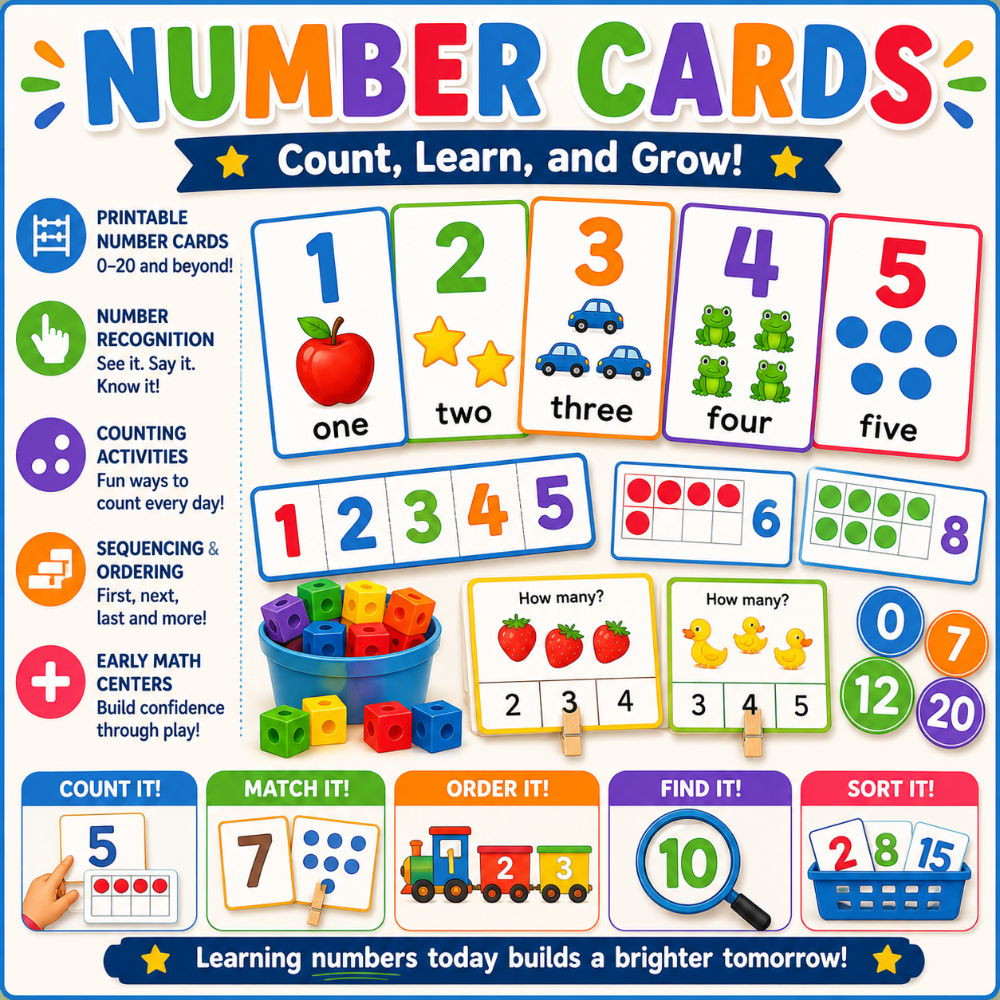
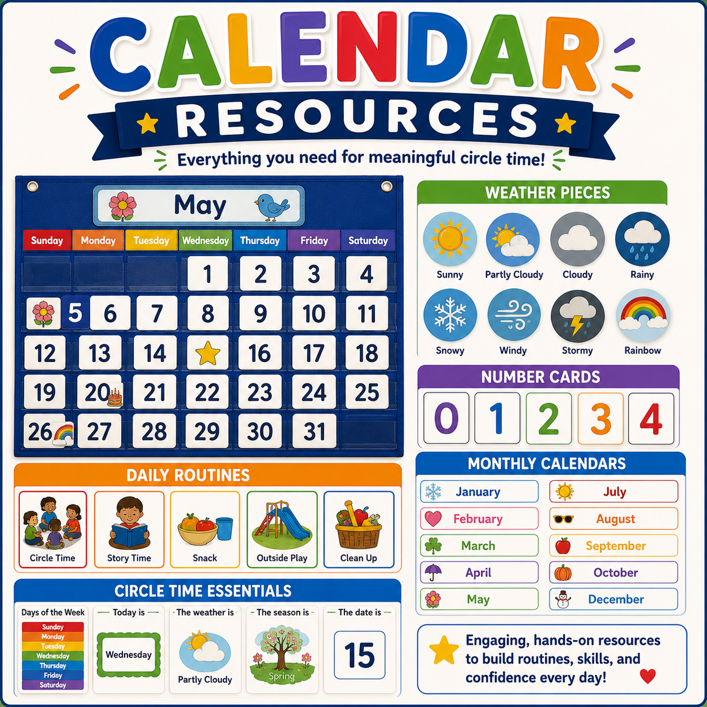

Numbers
Counting Adventures
Children practice counting, number recognition, and one-to-one correspondence through play.
Early math activities help children explore numbers, patterns, shapes, measurement, and problem solving through hands-on experiences that make learning meaningful.

Young children develop math skills when they count, compare, sort, build patterns, explore shapes, and solve problems during everyday experiences. Hands-on math activities help children become confident mathematical thinkers.
Hands-on experiences that help children explore numbers, patterns, shapes, and mathematical thinking.

Children practice counting, number recognition, and one-to-one correspondence through play.

Children identify shapes, compare attributes, and discover geometry in everyday objects.

Children create and extend patterns using colors, objects, movements, and classroom materials.
Children sort, compare, and classify objects while developing early reasoning skills.
Build mathematical thinking through play, investigation, and discovery.
Counting objects, number recognition, and quantity.
Identify shapes, compare sizes, and explore space.
Create sequences with colors, objects, and movements.
Group objects by attributes and characteristics.
Compare length, size, weight, and capacity.
Fun challenges that build mathematical thinking.
Simple classroom experiences that make math meaningful.
Children count objects, match numbers, and explore quantities.
Children search the classroom for different shapes and discuss their attributes.
Children create repeating patterns using colors, blocks, or movement.
Children sort classroom objects and explain how they grouped them.
Early math experiences help children build number sense, reasoning skills, problem solving abilities, and confidence.
Children learn counting, quantity, number recognition, and relationships between numbers.
Children use reasoning, trial and error, and strategies to solve challenges.
Children compare, classify, measure, and recognize patterns.
Children develop positive attitudes toward mathematics through play.
Create opportunities for children to explore math through everyday classroom experiences.
Encourage children to explain, compare, predict, and describe.
Connect math concepts to toys, materials, classroom objects, and daily routines.
Use games, movement, and hands-on activities to build understanding.
Value children's strategies, ideas, and discoveries.
Choose experiences that match children's developmental levels.
Cause and effect, stacking, matching, and early counting.
Explore →Sorting, simple patterns, counting games, and shape exploration.
Explore →Number games, measurement, patterns, and comparisons.
Explore →Problem solving, graphing, counting strategies, and kindergarten readiness.
Explore →Math activities support cognitive development, approaches to learning, language development, problem solving, and children's ability to explore mathematical ideas in meaningful ways.